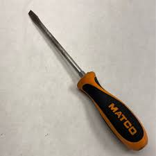
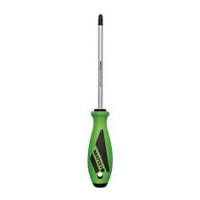
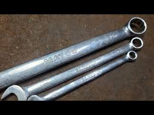
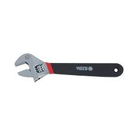

Lesson 2: Tools and Equipment
Lesson Overview
Understanding and properly using tools is crucial for every technician. This lesson covers essential tools and equipment in the workshop and how to use them safely and effectively.
Basic Hand Tools
- Flathead Screwdrivers: Used for turning screws with slotted heads. Ensure you use the correct size for each job to avoid damaging screws or hurting yourself. 
- Flathead Screwdrivers: Used for turning screws with cross cut heads. Ensure you use the correct size for each job to avoid damaging screws or hurting yourself. 
- Combination Wrenches: For tightening or loosening bolts. Always use the correct size to avoid slipping, causing damage to the nut or bolt and injury to yourself. 
- Adjustable Wrenches: Also known as crescent wrenches, they can be adjusted to fit various sizes of nuts and bolts. These wrenches are very handy to have in many situations but have a greater chance of slipping so you are always encouraged to use the correct size combination wrench or socket when able. 
- Hammers: Essential for striking items. Always use a hammer with a secure handle and grip.
Power Tools
- Drills: Used for drilling holes. Ensure proper safety measures, like securing the part to be drilled and wearing goggles, have been accomodated prior to operating a drill in the shop.
- Impact Drivers: Used for heavy-duty fastening tasks. Always be mindful of the power and torque they generate- It is very easy to twist your arm or wrist during operation.
- Grinders: Used for cutting, grinding, and polishing. Always wear eye and face protection when using grinders.
Equipment Safety
- Inspect tools before use to ensure they are in good working condition.
- Always follow manufacturer instructions when using power tools and equipment.
- Store tools and equipment properly to prevent accidents and damage.
Practice Exercises
Complete the following tasks to reinforce your understanding of tools and equipment safety:
- Identify three types of hand tools and describe their use.
- Explain the proper safety precautions when using power tools.
- Demonstrate the correct procedure for checking the safety of a tool before use.